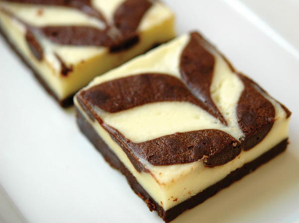

ORIGINAL RECIPE
Rafael's Righteous Cream Cheese Brownies
Editor's Note: "A tray of fresh brownies is one thing, but a tray of cream cheese brownies is decadence on another level! In this recipe for Rafael's Righteous Cream Cheese Brownies, chocolate and cream cheese create an unstoppable force. You'll love having this brownie recipe up your sleeve the next time you want to bake something special, unique, and a bit luxurious, too. As this recipe makes 36 brownies, you'll have plenty to share with coworkers, family, and friends. You can even make a batch to share at your next potluck or book club meeting, where these brownies are sure to be a hit."
Ingredients:
- 2 sticks (8 ounces) unsalted butter, warmed to room temperature
- ¾ cup (3 1/3 ounces) unsweetened chocolate
- 3 cups, granulated sugar, divided
- ½ cup all-purpose flour, sifted
- 6 large whole eggs, warmed to room temperature, divided
- ¼ teaspoon salt
- 2 teaspoons vanilla extract
- 2½ 8-ounce packages cream cheese, warmed to room temperature

Instructions:
- Prep: Take your eggs, butter, and cream cheese out of the refrigerator a couple of hours before you make the dish. Preheat the oven to 300 degrees F. Grease two 9 × 13-inch baking pans.
- Melt together the butter and chocolate in a double boiler or microwave. Transfer to a large mixing bowl.
- Using a whisk, blend 2 cups of the sugar and the salt into the chocolate-butter mixture.
- Slowly add 4 of the eggs to the mixture, 1 at a time.
- In 3 separate batches, add in the flour.
- Add the vanilla.
- In the bowl of a stand mixer fitted with the paddle attachment, or in a mixing bowl (if using a hand mixer), beat together the cream cheese and remaining 1 cup sugar until smooth (about 2 minutes), and then add the remaining 2 eggs, 1 at a time. (For this step, it is best to use a stand mixer fitted with the paddle attachment, but you can use a regular mixing bowl and a hand mixer if necessary.)
- Measure out 1½ cups of the chocolate mixture and set aside to use as a topping.
- Pour the remaining chocolate mixture into the greased 9 × 13-inch pans.
- Spread the cream cheese mixture on top of the chocolate mixture.
- Fill the piping bag fitted with the #804 tip with the reserved chocolate mixture. Pipe lines along the width of the brownies, about 1 inch apart.
- Run the paring knife through the length of the brownies (in the opposite direction of the piped lines you created), creating a pretty streaking effect. You can also use the knife to make “swirls” of whatever design you would like.
- Bake at 300 degrees F for 60 minutes. Cool completely in the pans. After they cool completely at room temperature, refrigerate them in the pans for at least 4 to 5 hours before slicing.